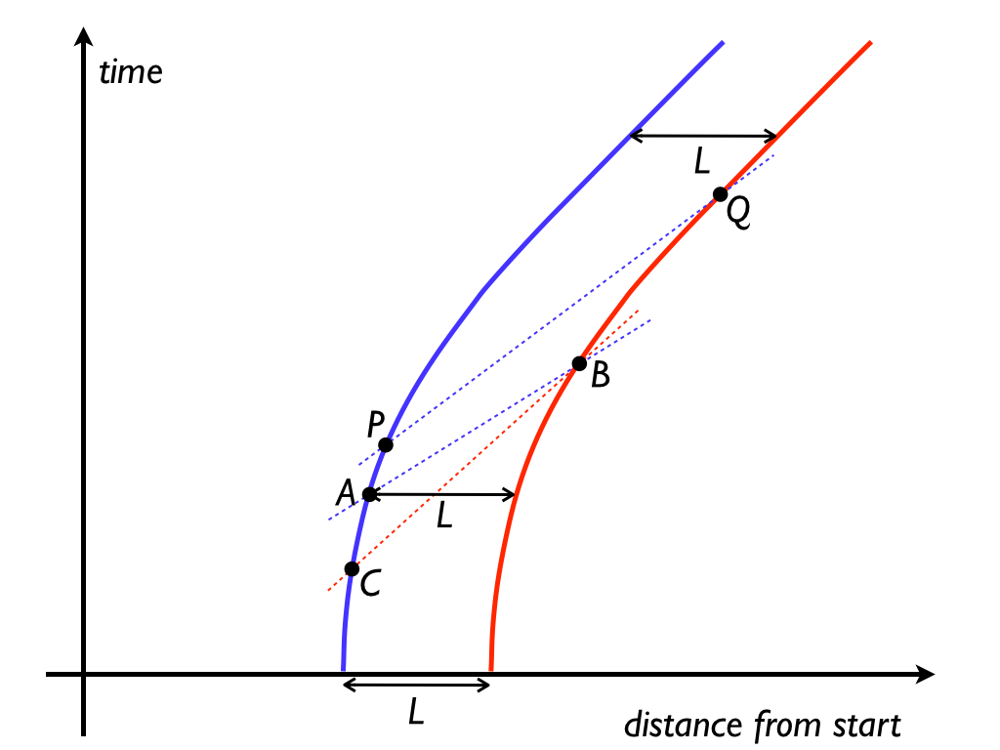
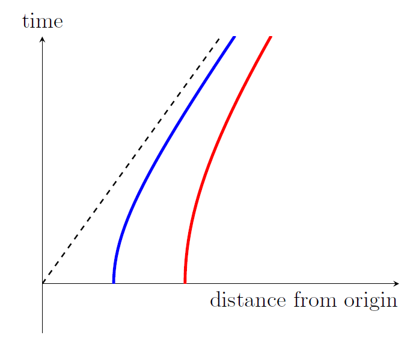

Updated by Michael Weiss, 2017.
New version by Don Koks, 2014.
Original by Michael Weiss, 1995.
John Bell described this special relativity paradox in the essay "How to teach special relativity" in his collection Speakable and Unspeakable in Quantum Mechanics. The puzzle was actually invented by Edmond Dewan and Michael Beran [1], but it's generally known as Bell's Spaceship Paradox.
Bell considered two rocket ships connected by a string, with both having the same acceleration in the inertial "lab frame", with one ship trailing the other and both moving along one line. The ships start out at rest in the lab. Their accelerations in the lab frame are required always to be equal, but these accelerations can vary with time. Because the ships always maintain equal accelerations in the lab frame, their speeds will be equal at all times in the lab, and so they'll remain a constant distance apart in the lab. But after a time they will acquire a high speed, at which point we ask what has become of the idea of the distance between them being Lorentz contracted. The actual paradox posed by Dewan & Beran and by Bell was that the string should eventually snap. But why should it snap, if the ships are maintaining a constant separation?
The string is really window dressing. So are the rockets. At heart this is purely a kinematical problem about moving points. We'll discuss the ships and string at the end of this entry. We'll use the word "rocket" for its cinematic value, but you should think of the rockets as mere points for now. To repeat the setup in the stripped-down version: the rockets start accelerating at t = 0 in the lab frame; they maintain equal accelerations at all times according to the lab frame; and we will set their lab accelerations to be such that according to the rocket inhabitants, the acceleration that they feel (their weight, if you like), is constant. (Clearly they cannot maintain a constant acceleration indefinitely in the lab frame, without eventually exceeding the speed of light! But it is possible to have them accelerate in the lab indefinitely in such a way that they always feel the same acceleration.) On the one hand, it seems that their separation must remain constant. On the other hand, it seems that this separation should Lorentz-contract. That's the paradox.
Before we start to analyse the above scenario, note that the Lorentz contraction factor refers to measurements made in inertial frames. (See Can Special Relativity Handle Acceleration? and Does a clock's acceleration affect its timing rate? for a brief discussion of inertial versus accelerated frames.) We assume that the lab frame is inertial.
In the lab frame, the rockets remain a constant distance apart. Relativity says that the distance between two rockets is contracted from the "proper distance", when measured by an inertial observer whom they move past at some fraction v of the speed of light: it's contracted by the gamma factor γ = (1 − v2) −1/2 (in units where c = 1). The proper distance between the rockets is the distance between them in the frame in which they are both at rest. But there is actually no inertial frame in which the rockets are always at rest, and so we can't define any "proper separation" for them. That means we won't find that any simple expression holds for length contraction. But there is at least an approximate notion of the proper separation of the rockets, and we'll find that this is approximately γ times their lab separation. So their approximate proper separation increases by roughly γ as the rockets move, and the result is then reduced by γ as measured by the lab observer, who thus does measure a Lorentz contraction back to the lab separation. The rockets' proper separation—inasmuch as it can be defined—is set by γ; but γ is constantly increasing as the rockets speed up, so their proper separation must increase over time.What is this approximate proper separation, and how can it be increasing as the rockets accelerate? I'll sketch the solution without providing any of the mathematics. Doing everything quantitatively is certainly enlightening, but because the rockets are accelerating, the details are not simple enough to put into this FAQ entry without obscuring the main issues.

The picture at left is a schematic of the spacetime scenario, drawn in the lab frame.
The key concept we need is the notion of a momentarily comoving inertial frame (MCIF for short); that's an inertial frame that "for an instant" matches the velocity of a moving point. Mathematically, it's an inertial frame constructed by finding the tangent to the world line of the point, and using that as its time axis. The space axis—the line of simultaneity—is then constructed by the usual synchronisation method of SR. See Does a clock's acceleration affect its timing rate? for more details.
The blue curve in the picture is the world line of the trailing rocket, and the red curve is the world line of the leading rocket. Their separation in the lab is a constant L. Focus now on event A. The dotted blue line passing through A is the space axis for the MCIF at A. The blue rocket regards (measures) all events on this line as being simultaneous with A. In particular, the blue rocket says that event B is simultaneous with A. The two rockets' clocks both read zero when they started out, so we see here that the blue (trailing) rocket measures the red (leading) rocket to be ageing quickly. On the other hand, the red rocket doesn't say that A and B are simultaneous. If it draws all the events that it measures as simultaneous with B, these events form the dotted red line, and this line crosses the blue world line at event C. So the red rocket says that event C is simultaneous with B, and, as a result, it measures the blue rocket to be ageing very slowly. The factors by which the rockets each measure the other to be ageing relative to themselves are not inverses of each other. For example, the blue rocket might say that the red rocket is ageing twice as fast as blue, while the red rocket says that the blue rocket is ageing far more slowly than one half as fast as red. You can see the reason for these strange-sounding numbers by studying the diagram.
The distance that the blue rocket measures from A to B is approximately γL (in fact, it's somewhat more than γL). But if we ask the blue rocket to re-measure the distance from itself to the red rocket at a later time marked by event P, then the line of simultaneity will have changed: it will be the upper dotted blue line. This is not parallel to the lower dotted blue line, and this line crosses the red world line at event Q. The distance PQ will be larger than distance AB, and so the blue rocket will conclude that the red rocket is actually pulling away from it. Given that blue measures the distance to red to be approximately γL, we can see that the separation L measured in the lab is indeed more or less a Lorentz contraction of γL back to L. But I say "more or less" because this lack of shared agreement on which events are simultaneous means that the two rockets don't form a frame of their own, and so we can't talk about transforming one frame to another with a simple Lorentz contraction.
As we noted already, the MCIFs for the blue and red rocket do not match up nicely.To recap:

Is it possible to change the motion of one rocket so that the pair will form a frame? Yes, it is. The red and blue curves are hyperbolae, and in the first figure they have different asymptotes as they accelerate ever closer to the speed of light. (Note that they will always outrun light beams that approach from the left of those asymptotes.) In the second diagram, we've changed the accelerations so the two hyperbolae have the same asymptote. For that pair of rockets, it turns out that the red rocket will say that event A is simultaneous with event B, and the rockets will not measure each other to be drifting apart. This is remarkable, and in fact it forms the basis of Einstein's Equivalence Principle. Both rockets can agree on the simultaneity of all events, and as such can construct one meaningful set of coordinates that both can use to describe the world in identical terms. They form a uniformly accelerated frame, also known as a Rindler frame. The key to constructing such a frame is that its observers don't all have the same acceleration at the same lab times (although each observer does feel a constant acceleration). Even so, they do all measure themselves to be at rest relative to each other, and they all agree on the timing and simultaneity of events.
A study of how different observers accelerate to form a frame in which they can agree on simultaneity and can all set their clocks to a common time is not trivial, mathematically speaking. In basic special relativity when we consider inertial frames, we always assume that these frames have been inertial forever; we don't ask how they got to be moving that way. And that's fine. In the same way, it's best to make the second diagram symmetrical across the x-axis, so the rockets accelerate from infinitely far in the past to infinitely far into the future. Also, instead of just two hyperbolae, a Rindler frame has a continuous family of hyperbolae, filling out the so-called Rindler wedge: the region between the half-lines at plus and minus 45 degrees emanating from the origin.
Both Dewan and Beran and also Bell spoke of the rockets being constructed identically, and following identical acceleration programs. They conclude that the separation of the rockets in the lab frame will remain constant. Now, if we have a real string connecting the rockets, this no longer follows: the tension in the string will exert a force on both rockets, trying to reduce the acceleration of the leading rocket and to increase that of the trailing rocket. In the limit of an "infinitely strong string" (Hooke's constant infinity), the rockets would form a Rindler pair. In the limit of an infinitely weak string, they would maintain a constant separation, either because the string immediately breaks or because it stretches while exerting zero tension (Hooke's constant 0).
What would actually happen? That depends on how realistically we want to model the situation. The Dewan–Beran scenario comes from inserting a physically realistic string into physically unrealistic kinematics. Let's start with the dynamics of a single particle (i.e., a mass point), and then increase the reality quotient bit by bit.
For a single particle, the so-called proper acceleration is the acceleration as measured in a momentarily comoving inertial frame. If g' is the proper acceleration and g is the acceleration as measured in the lab frame, then computation shows that g = g'/γ3. If m' is the rest mass of the point and m is its relativistic mass (the mass as measured in the lab frame), then m = γm'. So using good old F = ma, we conclude that a so-called proper force F' corresponds to a force F = F'/γ2, as measured by the lab observers. It turns out that real forces such as electromagnetic forces do follow this transformation rule.
We can model our string as a chain of particles, with the front of the chain attached to the leading rocket, and the end of the chain attached to the trailing rocket. For the simplest analysis, we just assume that the points follow certain paths through spacetime, and calculate the forces needed. In the Dewan–Beran scenario, all the points have the same constant proper acceleration at all times, so the same constant proper force is needed for each. This doesn't seem like a problem. But note that the points keep getting farther and farther apart, indefinitely, as seen by the MCIFs. If we impose the physical assumption that no real string can stretch indefinitely, we conclude that the string eventually breaks.
If we opt for even more realism, we need a model of the cohesive forces. The simplest is surely Hooke's law; but something more complicated is needed if you want to incorporate an elastic limit. (Pure electromagnetism won't give you this; quantum mechanics is also needed.) We also need to consider the acceleration forces from the rocket engines, and how forces are transmitted down the string. To keep things fairly simple, let's take the case where the leading rocket is towing the trailing rocket, and discuss it qualitatively.
When the lead rocket fires its engines, the first particle of the string acquires an acceleration. The increasing separation induces an acceleration in the second particle, and so on down the line. Even in newtonian mechanics we'd have a pulse traveling down the string. Mathematically, we end up with what are called transient solutions to a wave equation; when these die out, we have the so-called steady-state solution.
In the newtonian case, the steady state has all the particles relatively at rest, and so all have the same acceleration. The net force on each particle must be the same, or rather proportional to its mass. There is a caveat, though: if the elastic limit between a pair of particles is exceeded before reaching the steady state, then the string snaps. Whether this happens, of course, depends on all sorts of details. If you try to tow a car with thin cotton thread, it will break! With a heavy cable, probably not!
Our relativistic variant tells a similar story, but with a twist. The steady state now looks like a Rindler family of hyperbolae. The particles farther back must have greater acceleration than the ones in front. If we impose the boundary condition that the last particle (attached to the trailing spaceship) must have the same proper acceleration as the leading spaceship, then no steady-state solution exists.
In a sense, the Dewan–Beran–Bell scenario has a newtonian counterpart. Suppose we have a truck towing a car. Suppose we assume the truck and car each have constant acceleration, with gtruck > gcar. Then the chain between them must either stretch indefinitely, or finally break. No surprise there! The relativity variant packs a punch because of the unfamiliar kinematics of SR.
To see all the details of how different observers must accelerate to form a uniformly accelerated frame, see Chapter 7 of "Explorations in Mathematical Physics" by D. Koks (Springer, 2006).
[1] Edmond Dewan and Michael Beran, Note on stress effects due to relativistic contraction, American Journal of Physics, March 1959, pages 517–518.